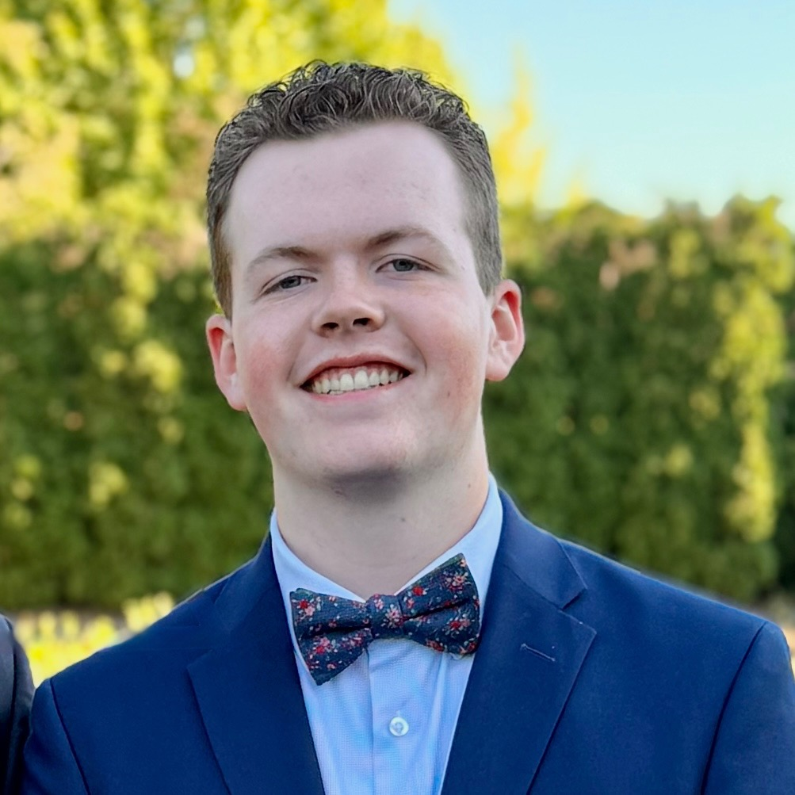

Email: Stimpson.Connor@student.greenriver.edu
GitHub
Software development college student with experience in front-end development.
Associate Degree in Software Development
Created games and gameplay systems using C# and Unity.
Created websites using HTML and CSS.
Worked as a host at Al Lago, greeting and seating customers, managing reservations, and communicating with staff and guests.